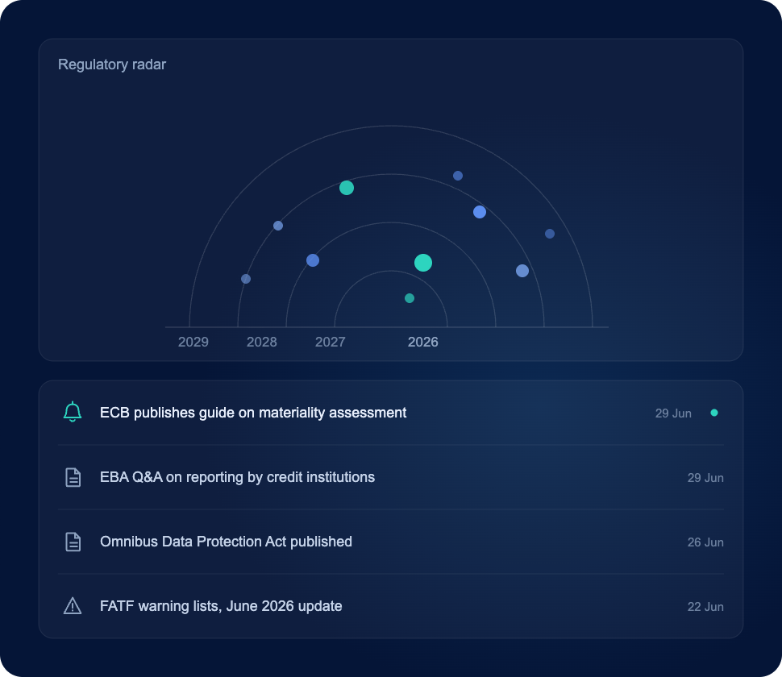
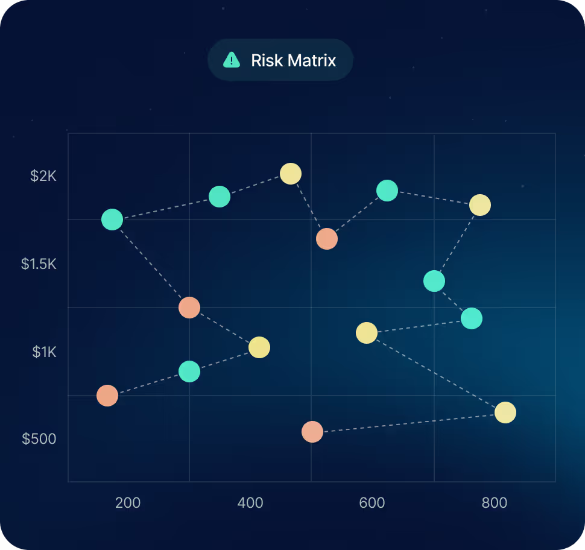
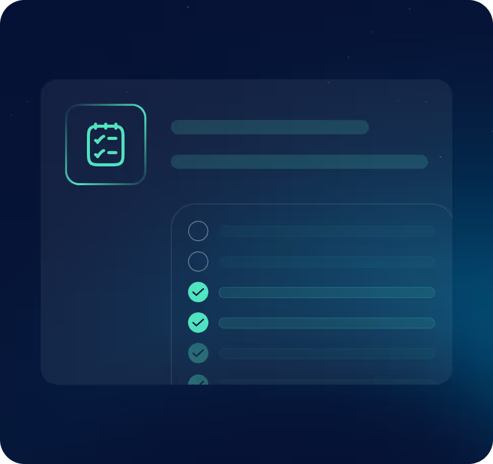
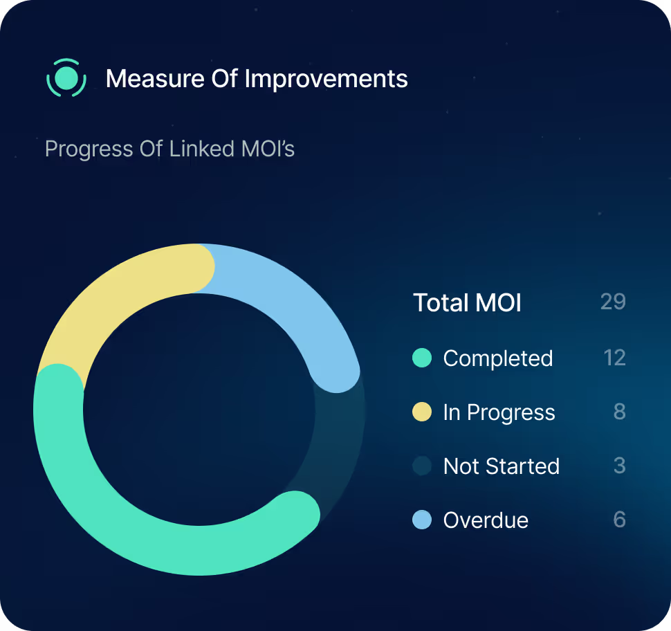
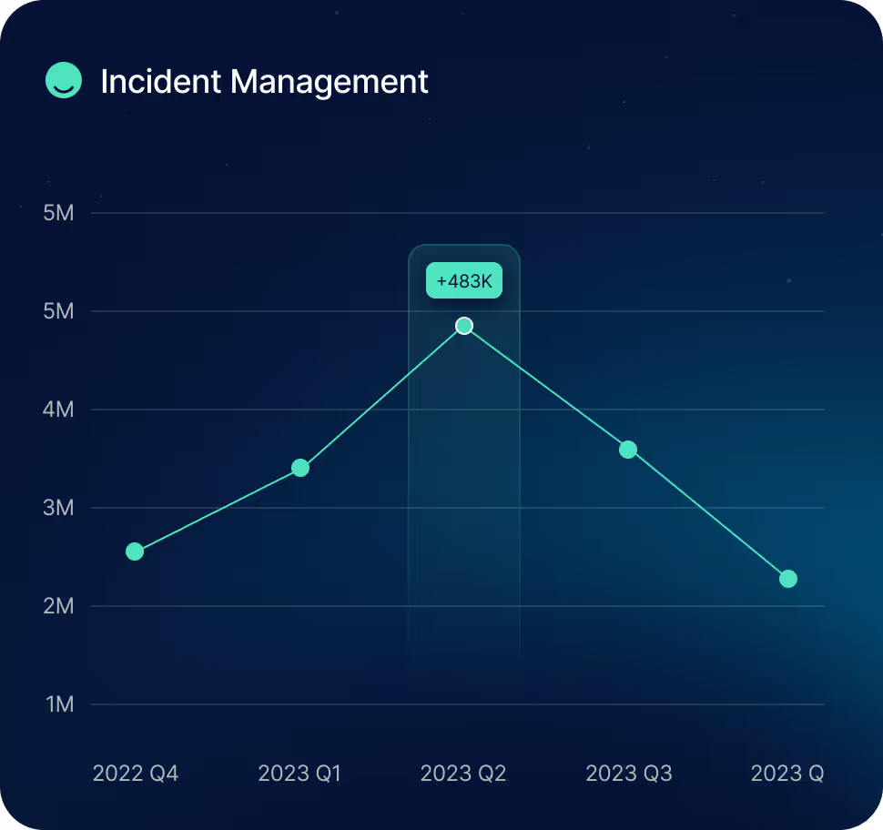
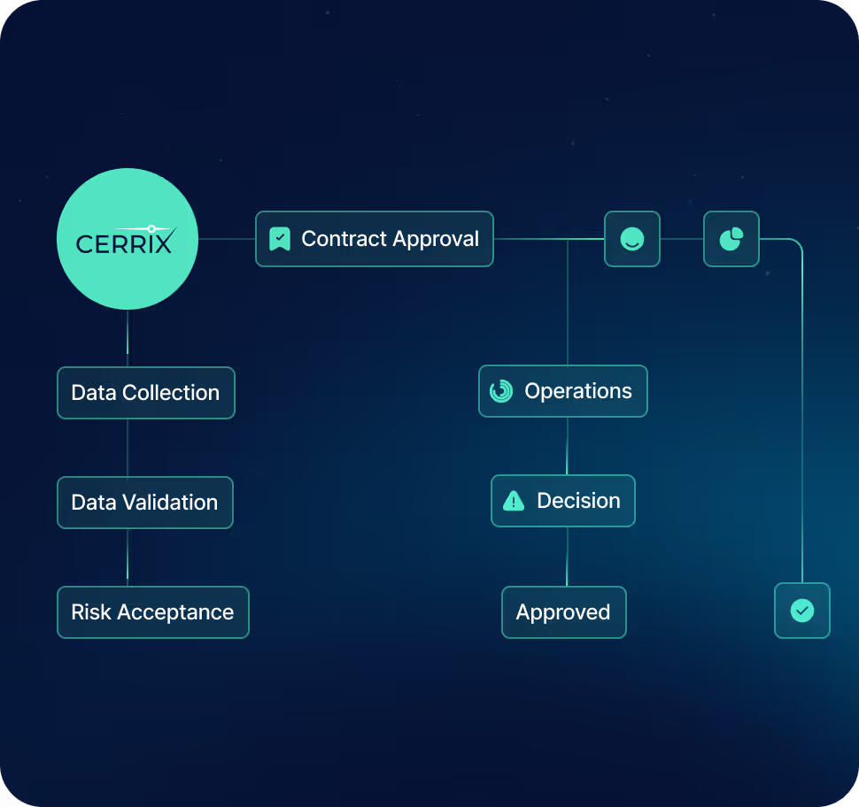
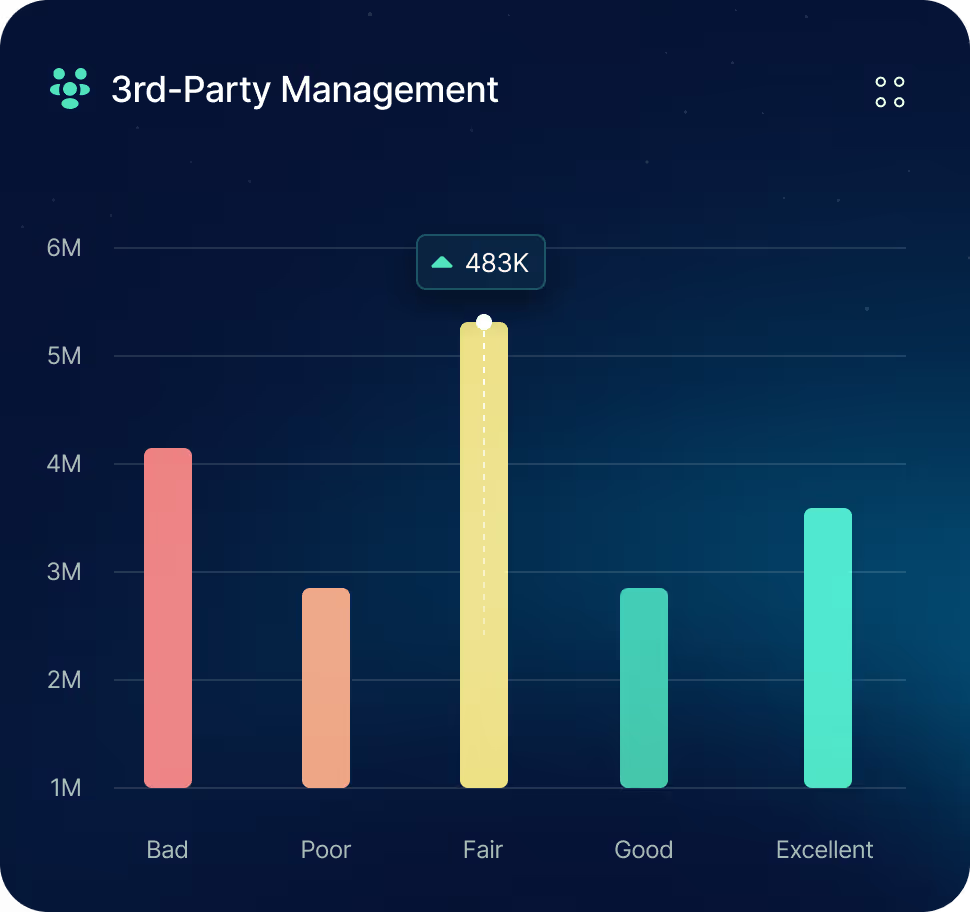
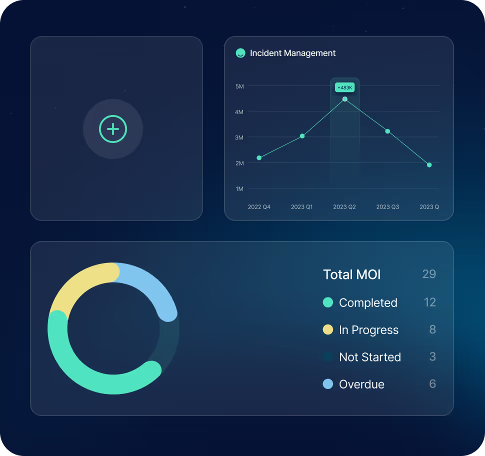

Risico's, controls, bewijs en eigenaarschap op één plek. Voor alle drie de lijnen.
Uitgelicht
NieuwRegelgeving met de hand bijhouden over meerdere bronnen kost tijd en leidt tot fouten. Ruler en CERRIX geven je één traceerbare keten van wijziging tot control.

Module
Breng risico's en controls samen in één register. Zo zie je altijd waar je staat, zonder losse spreadsheets bij te houden.

Module
Wet- en regelgeving vertaald naar normen en controls in één omgeving. Zo laat je op elk moment zien dat je voldoet, met het bewijs erbij.

Module
Plan audits, leg bevindingen vast en volg verbeteracties op tot ze zijn afgerond. De tweede en derde lijn werken in dezelfde data.

Module
Meld, classificeer en handel incidenten af volgens vaste stappen. Ernstige incidenten meld je op tijd aan de toezichthouder.

Module
Breng je processen in kaart en koppel ze aan risico's en controls. Zo zie je per proces waar je kwetsbaar bent en wie verantwoordelijk is.

Module
Houd grip op leveranciers en uitbesteding, van selectie tot exit. Het register van informatie vul je bij terwijl je werkt.

Module
Leg verwerkingen vast, beoordeel risico's met een DPIA en handel datalekken af binnen de wettelijke termijn.
Module
Realtime inzicht in risico's, controls en acties, van werkvloer tot bestuur. Rapportages maak je in minuten in plaats van dagen.

Module
AI helpt bij het werk dat nu het meeste tijd kost: zoeken, samenvatten en terugkerende taken. Jij houdt de regie en keurt goed.